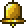

Bell
| Bell | |
|---|---|
| Statistics | |
| Type | Crafting material |
| Max stack | 1 |
| Rarity | Orange |
| Use time | 11 |
| Buy/Sell | 1 |
The Bell is an item sold by the Wizard NPC. When used, it will generate a sound effect which sounds much like an actual bell. The sound effect's pitch is determined by the distance between your character and the point on the screen you click on. Ringing a bell in an end-of-world ocean increases chances of shark spawnVerify.
Used as material for Fairy Bell.
Crafting
Used in
| Result | Ingredients | Crafting Station | |
|---|---|---|---|
|  | Fairy Bell | Pixie Dust(80) | |
| Soul of Sight(20) | |||
| Gold Bar(15) | |||
| Soul of Light(15) | |||
| Bell(1) | |||
History
- 1.1: Introduced.